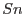
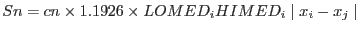

The outlier rejection algorithm makes use of a robust estimate of the data spread, , computed using the formula

given in [Rousseeuw, P.J. and Croux, C. (1993), "Alternatives to the Median Absolute Deviation," Journal of the American Statistical Association, Vol. 88, 1273-1283].
Three iterations of this calculation are performed, in each of which the median of the data and the value are computed. Data with an absolute deviation from the median of more than 2.0 times are rejected.